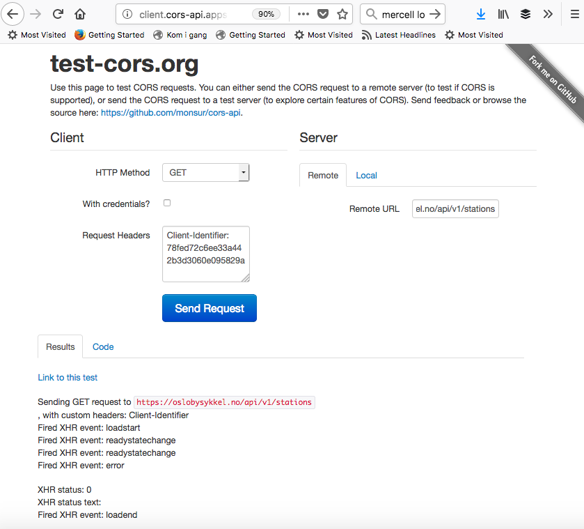

Det burde være enkelt å hente data fra oslo bysykkel sitt API https://developer.oslobysykkel.no/api
Men det er et cors problem på oslo bysykkel sin server. Det gjør at man ikek bare kan lage et javascript program som henter data fra deres API.
Du finner et test program her http://client.cors-api.appspot.com/client
Du kan kjøre testen ved å følge denne linken
CORS testenUnder ser du resultatet på testen. Legg merke til at det står "error" som resultat av kallet.
